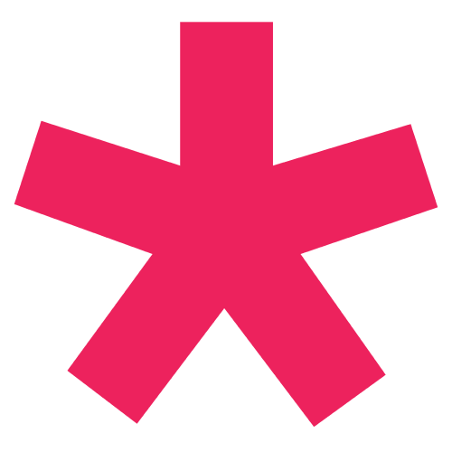

제작
문의
위치
한양대 에리카 소프트웨어융합대학 ICT 융합학부 컬처테크놀로지 전공 김윤식
+82) 10-4338-0887
한양대학로 55
HTML
CSS
p5.js

환영합니다.
환영합니다.
이곳은 트렌트 융합 연구소 입니다.
여러 사회적 요인을 분석하고 트렌드를 도출해내는 곳.
이번 주제는 바로...
왜 하필 대학?
대학교 입시 결과 및 지원자 수는 당해 사회 트렌드와 연관이 있을 수 있는 몇 가지 이유가 있습니다.
첫째,
사회의 가치 및 우선순위 변화는 학생들의 대학 전공 선택에 영향을 미칠 수 있습니다. 예를 들어, 환경 문제에 대한 관심이 증가하면 환경 관련 전공에 대한 수요가 증가할 수 있습니다. 이는 해당 전공에 대한 입시 경쟁률을 높이고 지원자 수를 증가시킬 수 있습니다.
둘째,
경제적 요인은 대학교 입시 결과와 지원자 수에 영향을 미칠 수 있습니다. 경제적 불안정이나 대학 등록 비용 증가는 학생들의 입학 가능성과 대학 선택에 영향을 줄 수 있습니다. 경제적으로 어려운 상황에서는 대학 진학을 포기하거나 입학 경쟁이 더 심화될 수 있습니다.
셋째,
기술과 산업의 발전은 대학교 입시 결과와 지원자 수에도 영향을 미칠 수 있습니다. 새로운 기술 및 산업 분야의 발전에 따라 학생들은 관련 전공에 더 큰 흥미를 느낄 수 있으며, 향후 취업에 관해 다소 풍족한 일자리를 제공 받을수 있기 때문입니다. 해당 분야에 지원자 수가 증가할 수 있습니다.
대학교 입시결과를 한눈에 보여줄 도표 입니다.